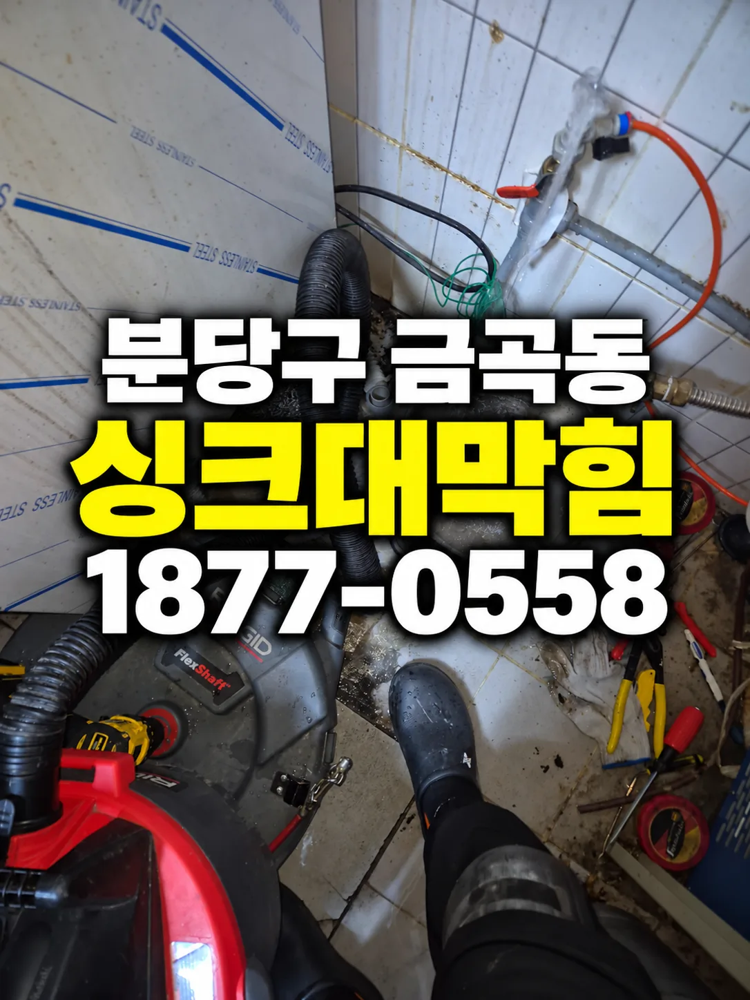
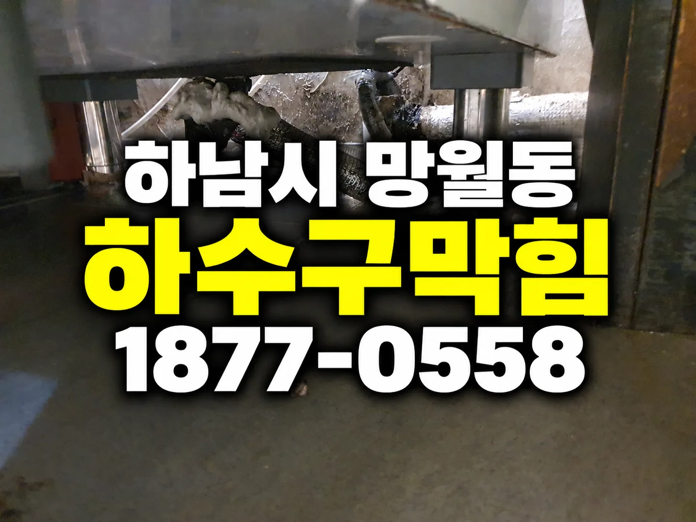
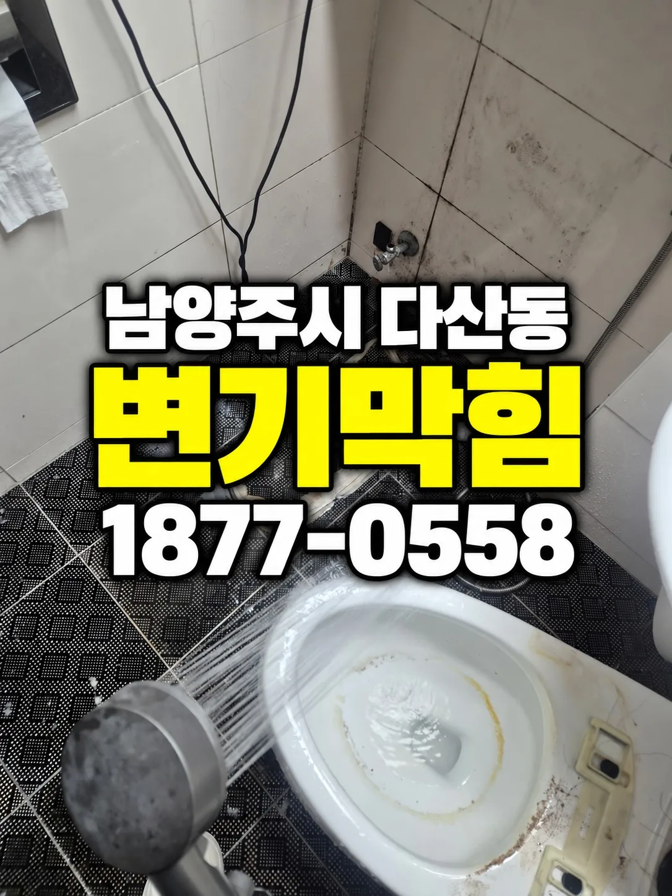
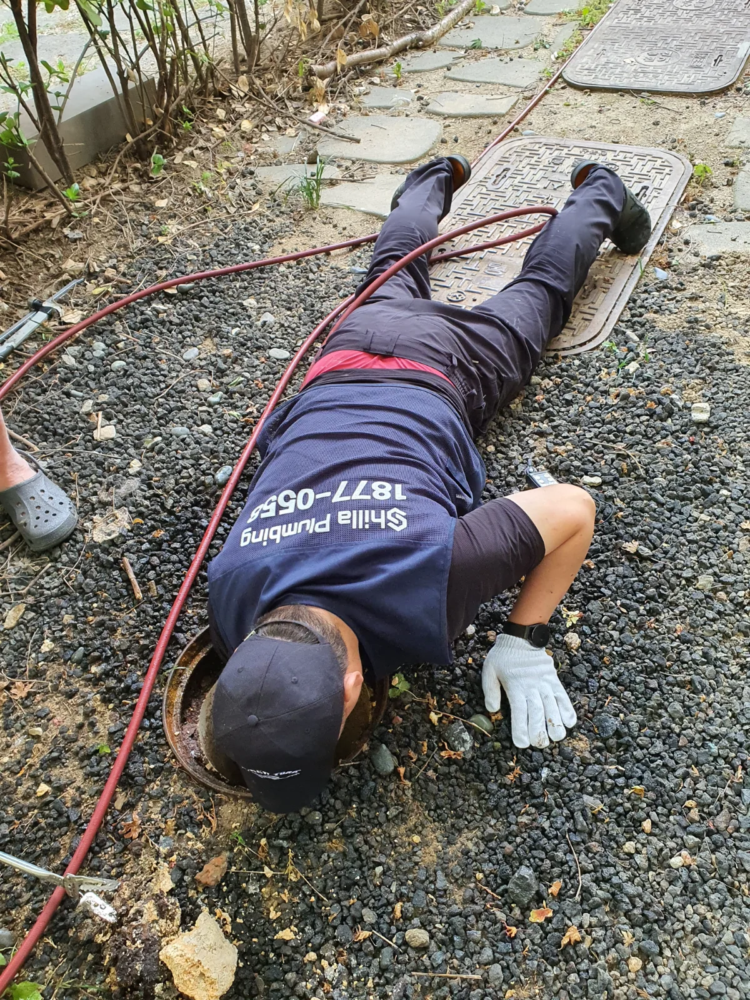
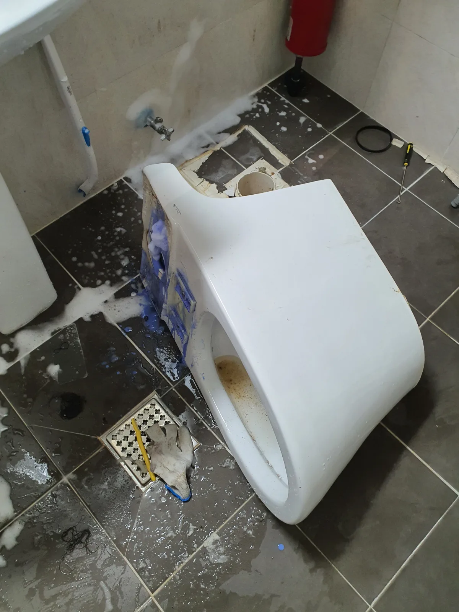
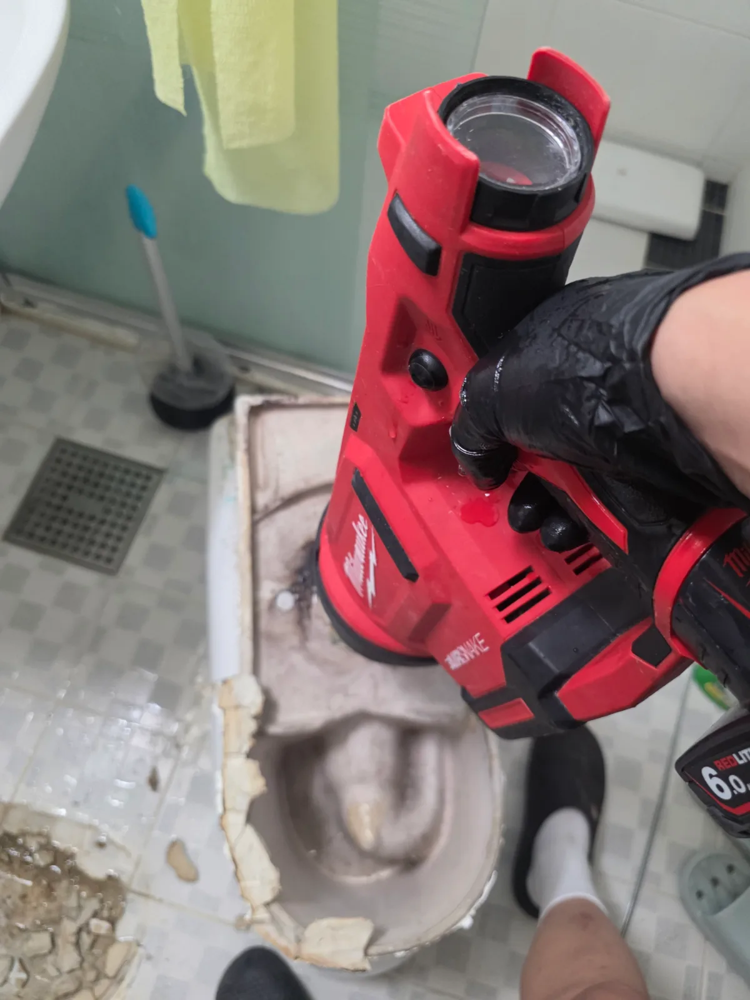
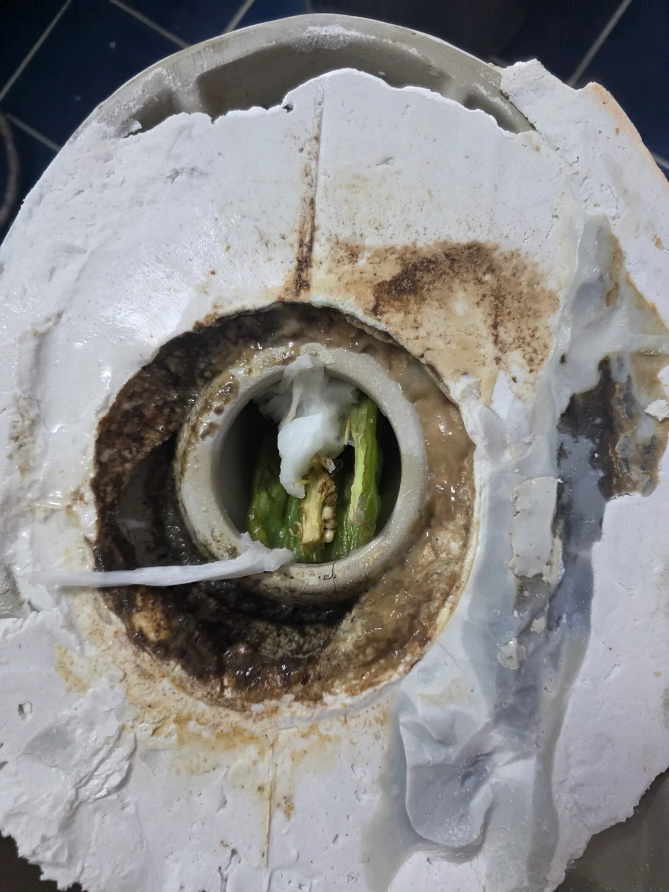
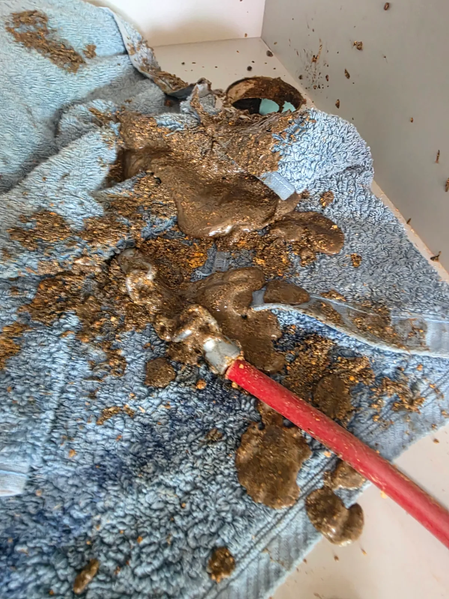

성남시 분당구 금곡동 싱크대막힘 | 분당구 금곡동 식당 싱크대막힘 굳은 기름때 석션
성남시 분당구 금곡동 싱크대막힘 오래된 주름관과 배수관에 쌓인 기름때를 확인하고 석션 샤프트 작업을 반복해 제거한 뒤 최종 통수테스트로 배수를
경기도 FIELD NOTES
실제 출동 기록이 있는 지역을 중심으로 변기·싱크대·하수구·배관 작업 사례를 연결합니다.

성남시 분당구 금곡동 싱크대막힘 오래된 주름관과 배수관에 쌓인 기름때를 확인하고 석션 샤프트 작업을 반복해 제거한 뒤 최종 통수테스트로 배수를

하남시 망월동 하수구막힘 미사리 카페 배수구막힘 현장 하부 연결배관과 소재구를 확인하고 내시경 진단 후 샤프트로 커피 찌꺼기 기름 슬러지를

남양주시 다산동 변기막힘 아파트 변기에 물티슈 화장솜 머리카락이 엉켜 석션으로 해결되지 않아 탈거 후 에어건으로 이물질을 제거하고 정상 통수를

수원시 권선구 권선동 변기막힘 아파트 변기 내부의 좁은 트랩 구간에 사과 조각이 끼어 변기를 탈거해 이물질을 제거하고 정상 통수 확인과 하부
안양시 동안구 평촌동 싱크대막힘 싱크대 물이 조금씩 역류하던 평촌동 아파트에서 석션 내시경 진단 후 샤프트 2회 배관스케일링으로 기름 오염물을
구리시 인창동 변기막힘 변기 내부에 들어간 전자담배를 내시경으로 확인한 뒤 석션 작업으로 회수하고 배수 상태를 점검한 사례입니다

성남시 분당구 판교동 하수구막힘 판교동에서 심야에 발생한 공용 오수배관 막힘 현장입니다 리지드 샤프트로 굳은 기름때를 1차 제거하고 주변 소음을
파주시 야당동 하수구막힘 야당동에서 약 8개월 만에 재발한 공용배관 막힘 현장입니다 배관 전 구간 고압세척과 역구배 구간 집중 세척으로 막힘을

양주시 덕정동 변기막힘 현장에서 에어건 작업 후 변기를 탈거해 봉수트랩에 세로로 끼어 있던 얇은 플라스틱 헤라를 확인하고 변기 손상을 피하기

구리시 인창동 변기막힘 현장에서 고객 요청에 따라 무리한 관통 작업 대신 변기를 탈거하고 에어건 작업으로 플라스틱 용기형 이물질을 회수한

광명시 광명동 변기막힘 현장에서 변기를 탈거해 확인한 결과 하부 통로에 채소류와 휴지가 걸려 있었고 이물질 제거와 에어건 작업 후 변기를

수지구 신봉동 싱크대막힘 싱크대에서 배수가 되지 않고 역류가 발생한 현장으로 배관내시경 확인 후 석션과 샤프트로 기름때와 퇴적물을 제거하고